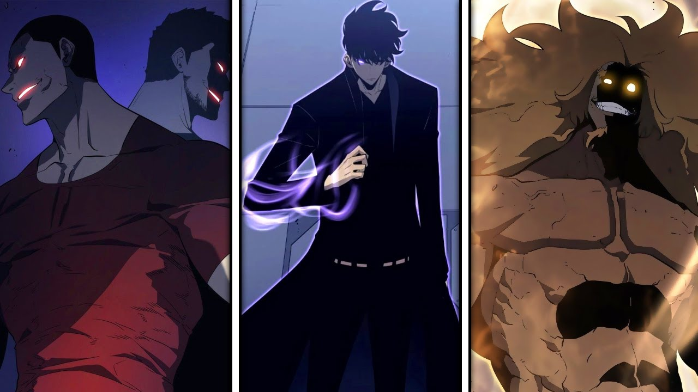
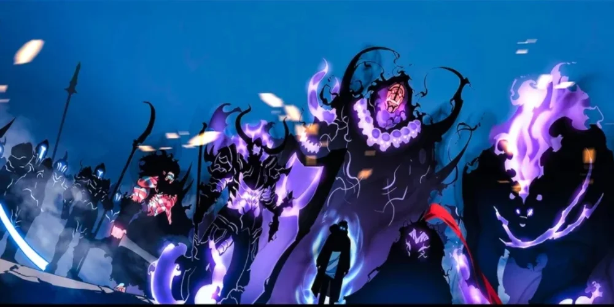
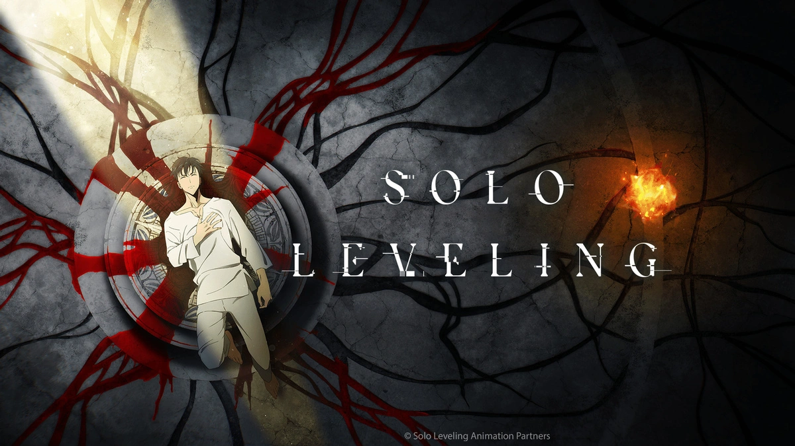
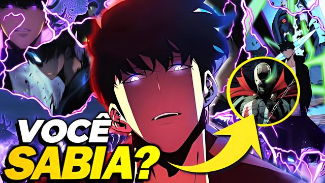

Solo Leveling é um popular webtoon sul-coreano baseado em uma light novel. Conta a história de Sung Jin-Woo, o caçador mais fraco que, após um misterioso evento, ganha a habilidade de se tornar mais forte sozinho, enfrentando dungeons perigosas e monstros mortais.
Explore neste site informações detalhadas sobre a série, seus personagens, habilidades, capítulos e muito mais.
História

Em um mundo onde portais aparecem de repente liberando monstros e dungeons, as pessoas com habilidades especiais, chamadas de caçadores, são responsáveis por combater essas ameaças. Sung Jin-Woo é inicialmente o caçador mais fraco, mas após uma experiência dentro de uma dungeon dupla, ele ganha o poder único de "level up" independentemente de grupos.
Ao longo da série, Jin-Woo cresce em força, descobre segredos do mundo dos caçadores e enfrenta inimigos cada vez mais poderosos para proteger os que ama.
Personagens Principais
- Sung Jin-Woo: O protagonista, conhecido como o caçador mais fraco inicialmente, que se torna um dos mais poderosos.
- Cha Hae-In: Uma das caçadoras de grau alto, interestelar e interesse amoroso de Jin-Woo.
- Jin-Ho Yoo: Irmão mais novo de Jin-Woo, que também se envolve no mundo dos caçadores.
- Go Gun-Hee: Presidente da Associação de Caçadores.
- Thomas Andre: Um dos caçadores mais fortes do mundo, rival de Jin-Woo.
- Hwang Dong Su: Hwang Dong Su é um caçador Rank S dos EUA, arrogante e vingativo. Ele busca confronto com Jin-Woo pela morte de seu irmão.
Habilidades de Jin-Woo
- Level Up: Habilidade única que permite a Jin-Woo aumentar seu nível e habilidades depois de missões.
- Summon Shadow Soldiers: Pode invocar sombras de inimigos derrotados para lutarem ao seu lado.
- Shadow Exchange: Teletransporte entre sombras.
- Dagger Mastery: Perito em armas leves, especialmente adagas.
- Enhanced Agility e Strength: Melhorias físicas excepcionais que o tornam um lutador formidável.
Capítulos e Temporadas
A série é dividida em capítulos lançados semanalmente no webtoon e possui uma história contínua que mistura ação, mistério e fantasia.
- Temporada 1: Introdução ao mundo dos caçadores, crescimento inicial de Jin-Woo.
- Temporada 2: Conflitos com guildas poderosas e ataques a escala global.
- Temporada 3: Revelações sobre o mundo dos portais e batalhas contra monstros lendários.
Novos capítulos continuam sendo lançados, mantendo a história emocionante e cheia de reviravoltas.
Curiosidades
- Solo Leveling foi originalmente uma novel escrita por Chu-Gong, depois adaptada para webtoon.
- O webtoon rapidamente se tornou um dos mais populares mundialmente, em especial no Brasil e Coreia do Sul.
- O protagonista Sung Jin-Woo é inspirado pelo arquétipo “underdog” (azarão), muito querido em histórias de superação.
- O autor usa um sistema de RPG com níveis e missões para explicar o crescimento do Jin-Woo.
- Existe um webtoon spin-off e vários jogos baseados no universo Solo Leveling.